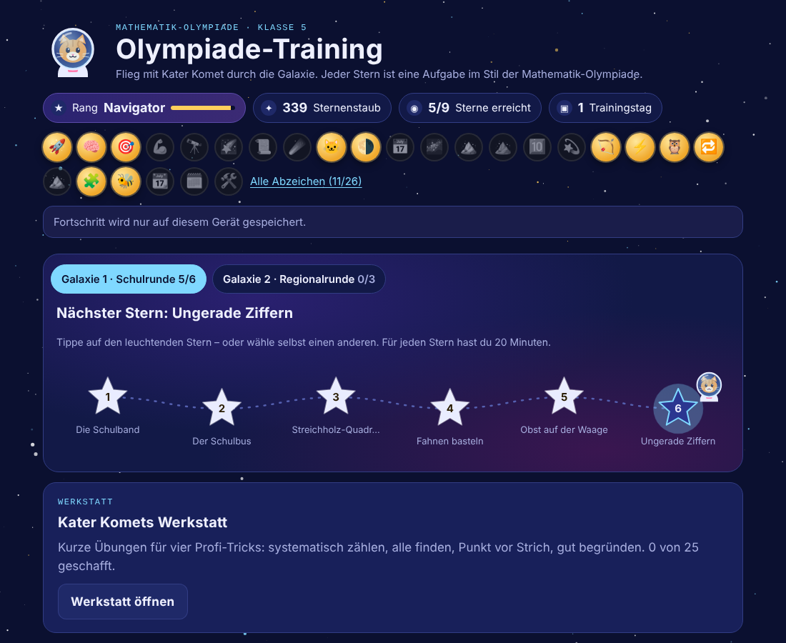
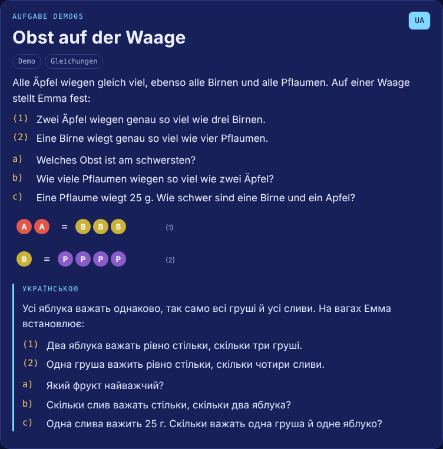
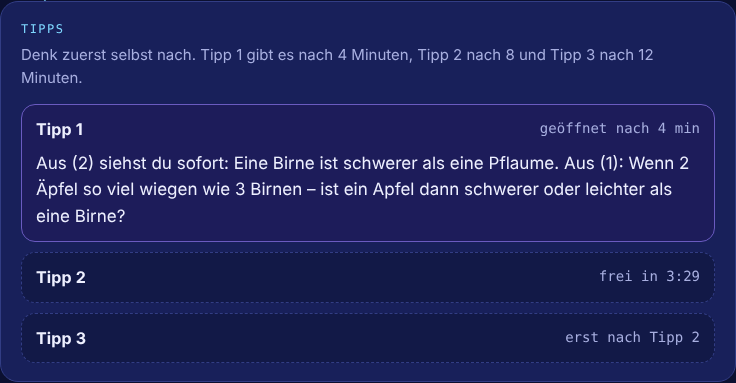
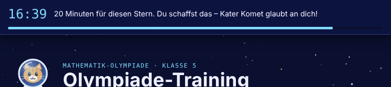
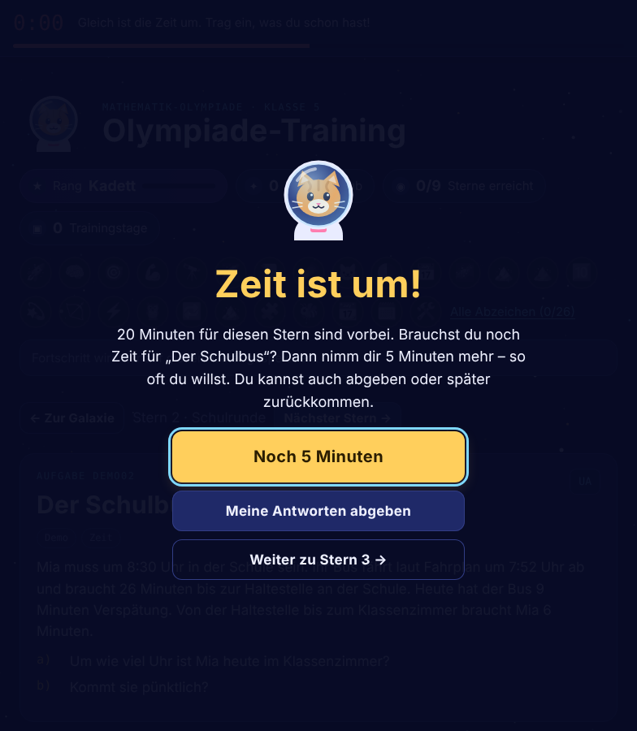
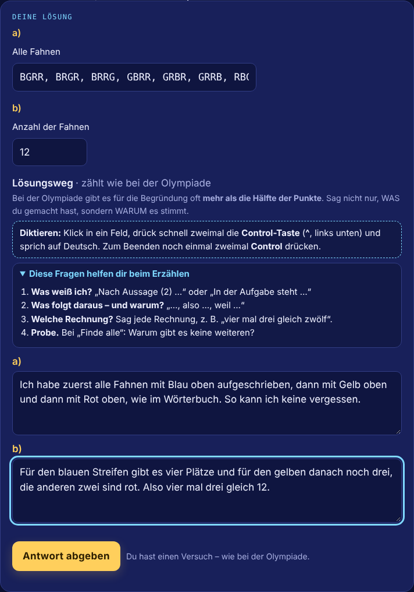
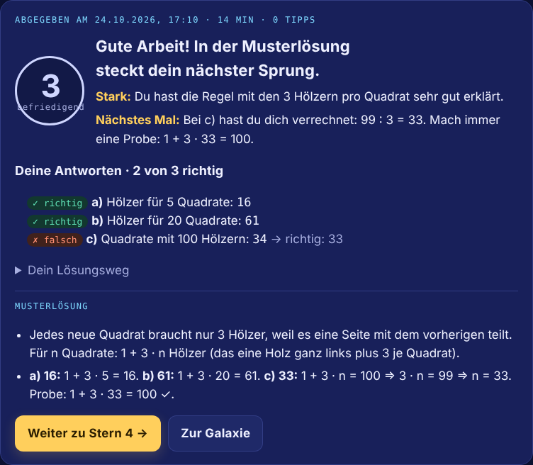
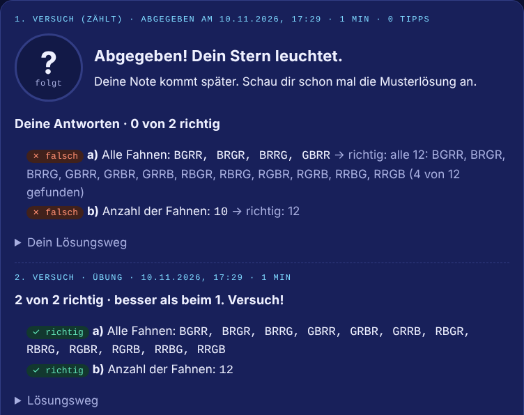

Olympiade-Training
Ein Trainer für die Mathematik-Olympiade (Klasse 5), der dort läuft, wo das Kind wirklich lernt: offline auf einem Tablet von 2014 und als Web-Version im Browser unter einem eigenen Konto. KI bewertet die Begründungen, Make.com und Airtable bringen die Ergebnisse zu den Eltern.
- Meine Rolle
- Produktverantwortung von der Anforderung bis zum Betrieb: Anforderungen und Entscheidungen, Tests auf der echten Hardware, Make-Szenario, Airtable-Modell und Dashboard, Datenanalyse der echten Abgaben und daraus abgeleitete Iterationen.
- Werkzeuge
- Claude, Make.com, Airtable, JavaScript (ES5-Build mit Babel), GitHub Pages
Ausgangslage
Ein Fünftklässler bereitet sich auf die Mathematik-Olympiade vor. Sein Tablet ist von 2014 (Android 4.1, Chrome 42) und oft offline.
- Die Olympiade bewertet den Lösungsweg. Die Begründung zählt mehr als das Ergebnis. Ein richtiges Ergebnis ohne Begründung bringt nach den offiziellen Bewertungsschemata meist nur 30 bis 50 Prozent der Punkte.
- Zweisprachige Familie. Die Aufgaben sind auf Deutsch, die Eltern wollen sie auf einen Blick auf Ukrainisch lesen. Das Kind begründet auf Deutsch, seiner Zweitsprache.
- Motivation. Schwere Aufgaben frustrieren einen Zehnjährigen schnell.
- Zwei Lernorte. Das Tablet für unterwegs, ein Laptop mit Mikrofon für längere Einheiten. Das Kind soll den Trainer auf dem Laptop nutzen, ohne Zugriff auf das Konto der Eltern.
- Keine Transparenz für die Eltern. Sie sehen nicht, wo die Lücken liegen.
Vorgehen
Das Projekt entstand aus einem echten Bedarf zu Hause. Ich habe es wie ein kleines Produktprojekt geführt.
- Anforderungen über strukturierte Fragen. Vor dem ersten Code waren alle offenen Punkte als Auswahlfragen entschieden: Reihenfolge der Aufgaben, Zeitpunkt der Tipps, ein Versuch wie im echten Wettbewerb, Notenskala 1 bis 6, was übersetzt wird und was nicht.
- Prototyp und Feldtest. Die erste Version lief am Desktop, auf dem Tablet blieb sie leer. Ursache: Chrome 42 versteht modernes JavaScript und CSS nicht. Lösung: eine zweite Build-Strecke nach ES5, eigenes CSS ohne Grid und Custom Properties und eine Startprüfung, die statt einer leeren Seite den Fehler und die Browserversion anzeigt.
- Iteration anhand echter Daten. Nach der ersten Woche habe ich die echten Abgaben ausgewertet. Drei Muster: unvollständiges Aufzählen (5 von 6 Anordnungen), Punktverlust durch fehlende Klammern und Begründungen, die sagen, was gerechnet wurde, aber nicht warum. Darauf habe ich mit neuen Antworttypen, einem Begründungsgerüst und Übungen in einer „Werkstatt“ reagiert.
- Automatisierung statt Kopieren. Ergebnisse als JSON-Code vom Offline-Tablet abzuschreiben war im Alltag unbrauchbar. Ich habe ein Make.com-Szenario aufgesetzt, siehe unten.
- Reibung entfernen. Die nächste Auswertung zeigte zwei neue Probleme: Das Tippen der Begründung auf dem 7-Zoll-Tablet war das größte Hindernis, und einzelne Aufgaben dauerten 30 bis 70 Minuten. Die Begründung wurde auf dem Tablet freiwillig, jede Aufgabe bekam ein Zeitfenster, und alle Aufgaben sind frei wählbar.
- Die Begründung kommt per Stimme zurück. Sprechen fällt einem Zehnjährigen leichter als Tippen. Am Laptop diktiert das Kind seinen Lösungsweg, dort zählt die Begründung wieder wie im Wettbewerb.
- Fortschritt, den die Eltern sehen. Airtable ist die zentrale Ablage: eine Zeile pro Aufgabe und eine pro Trainingstag. Ein Dashboard zeigt die Kennzahlen des Monats im Vergleich zum Vormonat.
- Zweite Stufe und eigenes Konto. Nach der Schulrunde kam eine zweite „Galaxie“ für die Regionalrunde dazu. Drei Wünsche kamen direkt vom Kind und aus den Daten: mehr Abzeichen, mehr Zeit pro Aufgabe und die Möglichkeit, eine Aufgabe noch einmal zu lösen. Das Kind arbeitet seitdem unter seinem eigenen Konto.
Lösung
- Zwei Versionen aus einem Quellcode: eine Offline-Datei für das alte Tablet (eigene ES5-Build-Pipeline) und eine Web-Version im Browser auf dem Laptop.
- Eigenes Konto des Kindes: In der Web-Version sieht das Kind nur den Trainer, nicht das Konto der Eltern. Der Fortschritt wird automatisch gespeichert.
- Zwei Stufen der Olympiade als zwei „Galaxien“: Schulrunde (24 Aufgaben) und Regionalrunde (20 Aufgaben).
- Gestufte Tipps und Zeitfenster: Tipps nach 4, 8 und 12 Minuten, 20 Minuten pro Aufgabe mit beliebig vielen Verlängerungen.
- Diktierte Begründung: Am Laptop wird die Begründung diktiert und von KI nach dem Olympiade-Maßstab bewertet: Note 1 bis 6 und eine kurze Notiz für die Eltern auf Ukrainisch.
- „Nochmal lösen“: Wie bei der Olympiade zählt der erste Versuch. Verbesserungen werden getrennt erfasst.
- Motivation: Ränge, „Sternenstaub“ und 26 Abzeichen. Eine Werkstatt mit 25 kurzen Übungen zielt auf die Schwächen, die die echten Abgaben gezeigt haben.








Automatisierung
Die Ergebnisse kommen auf zwei Wegen an. Das Tablet schickt sie, sobald es online ist, an einen Make.com-Webhook; ein Router unterscheidet zwischen echtem Upload und Verbindungstest, die Daten landen pro Gerät in einem Data Store. Die Web-Version speichert in ihrer eigenen Datenbank. Beide Quellen werden zusammengeführt und in Airtable abgelegt. Ein Dashboard liest Airtable und zeigt den Monatsvergleich.
| Einfaches Formular statt API-Aufruf | Das Tablet sendet ein normales HTML-Formular. Das braucht kein CORS und funktioniert auch mit Chrome 42. |
|---|---|
| Vor dem Rollout geprüft | Ob Android 4.1 das TLS-Zertifikat des Webhooks akzeptiert. |
| Erster Versuch und Übung getrennt | Note und Statistik behalten den ersten Versuch. Spätere Versuche werden als Übung gespeichert, auch in Airtable und im Dashboard. |
| Datenschutz | Keine Kinderdaten, keine IDs und keine Webhook-Adresse im öffentlichen Repository. Die Demo enthält nur eigene Aufgaben. |
Ergebnis
- Seit Oktober 2026 im täglichen Einsatz, auf zwei Geräten. Die Schulrunde der Olympiade ist geschafft, das Training läuft jetzt auf Regionalniveau.
- Jede Änderung kam aus echten Daten oder aus Wünschen des Kindes: freiwillige Begründung auf dem Tablet, Diktat am Laptop, längere Zeit, mehr Abzeichen, „Nochmal lösen“, eigenes Konto.
- Die Ergebnisse kommen ohne Kopieren bei den Eltern an und sind im Dashboard Monat für Monat vergleichbar.
- Für den alten Browser werden nur die 24 nötigen Polyfills gebündelt: etwa 66 KB statt etwa 750 KB.
Die neun Aufgaben in der Demo habe ich eigens für das Projekt geschrieben. Die echten Olympiade-Aufgaben sind urheberrechtlich geschützt und nicht enthalten.